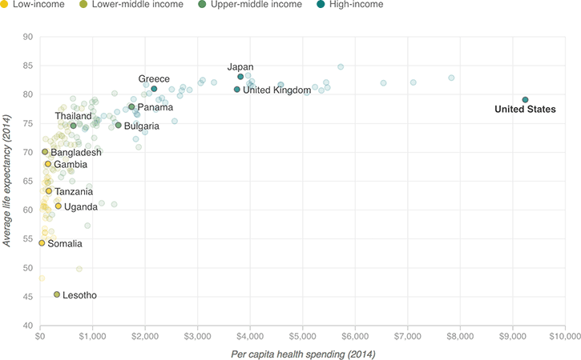

{% extends 'base_template.html' %}

{% block fonts %}

<!-- Fonts -->
<script src="https://apps.npr.org/dailygraphics/graphics/fonts/js/lib/webfont.js"></script>
<script>
WebFont.load({
    custom: {
        families: [ 'Gotham SSm:n4,n7' ],
        urls: [ 'https://s.npr.org/templates/css/fonts/GothamSSm.css' ]
    },
    timeout: 10000
});
</script>

{% endblock %}


{% block content %}

    {% if COPY.labels.headline %}<h1>{{ COPY.labels.headline }}</h1>{% endif %}
    {% if COPY.labels.subhed %}<h2>{{ render(COPY.labels.subhed) }}</h2>{% endif %}

    <div id="graphic"></div>

    {% if COPY.labels.footnote %}
    <div class="footnotes">
        <h4>Notes</h4>
        <p>{{ COPY.labels.footnote }}</p>
    </div>
    {% endif %}

    <div class="footer">
        {% if COPY.labels.source %}<p>Source: {{ COPY.labels.source }}</p>{% endif %}
        {% if COPY.labels.credit %}<p>Credit: {{ COPY.labels.credit }}</p>{% endif %}
    </div>

    <script type="text/javascript">
        var KEY = {{ COPY.key.json() }};
        var LABELS = {{ COPY.labels.json() }};
        var GRAPHIC_DATA = {{ COPY.data.json() }};
    </script>

{% endblock content %}
